Cover photo: you at a competition, looking off-frame
IN OMNIA PARATUS
- Ready for anything: the quote I live by
- The numbers behind my personality
- Eight roles, one timeline
- Still sailing at 28
Contents
From the Editor
This issue is a self-portrait built from six class activities. It has my philosophy, my test results, my habits, my timeline, and a letter to the person I will be at 28. Some of the numbers surprised me. Some of the memories are not easy to print. I kept them in anyway.
Portrait
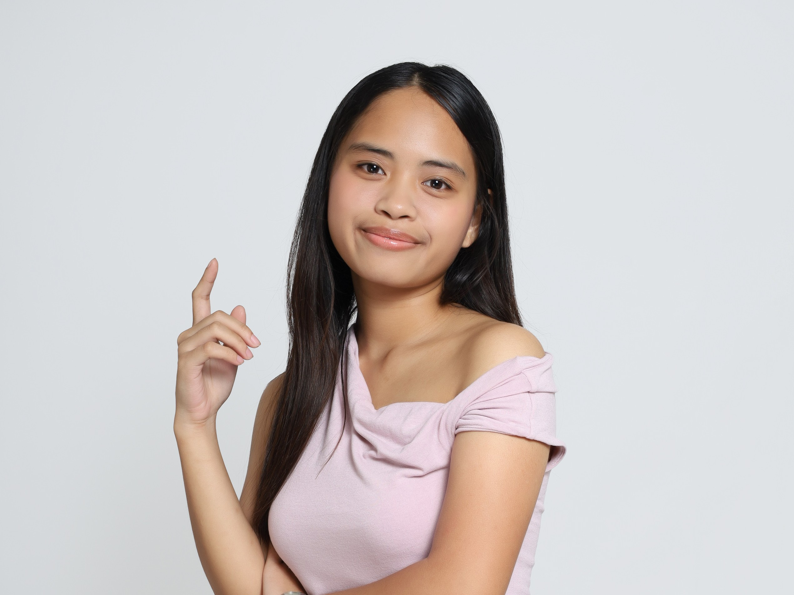
PARATUS
Gilmore Girls DVDs or favorite mug (your own photo)
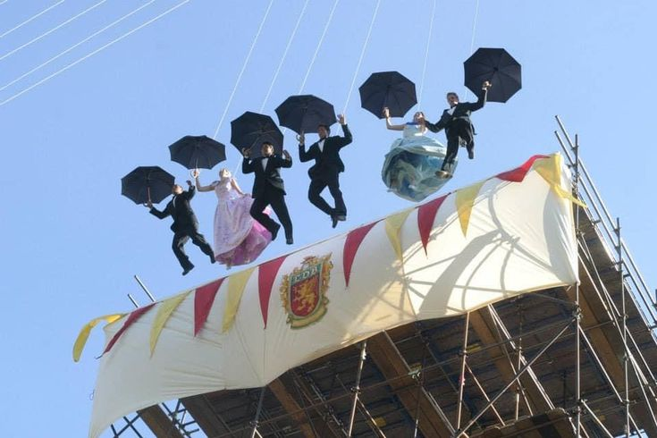
Ready for Anything
Even in the smallest decisions I make, I feel challenged.
There is something about this feeling that makes me want to move forward more. When I watched Gilmore Girls, one quote stayed with me: "In omnia paratus," or ready for anything. I do not have the power to see what will happen to me in the future, but I know that I am ready. The challenge is not doubt or uncertainty. It is motivation, a push to do everything wholeheartedly.
I am not a master of everything, but I am ready. Knowing that this is carved into who I am makes every day meaningful. Life is and will always be hard, but this is me, and I am ready for anything.
The Shape of Me
Conscientiousness came out on top at 5.67, driven by Prudence (6.09) and Organization (5.81).
For the most part, the results felt accurate. The traits I expected to be low, like Anxiety (2.87) and Dependence (2.98), came out low, which matches how I actually experience myself day to day.
Aesthetic Appreciation at 6.15 gave me pause. I like music, but I wouldn't say I'm moved by it the way that number suggests. Personality tests work like most self-knowledge: we build a picture of ourselves from fragments, and sometimes one fragment gets overweighted. A single question about music could have pulled that whole subtrait up.
What actually surprised me was Patience at 5.08 and Prudence at 6.09. I would have guessed I lean impulsive, especially under pressure. Maybe patience isn't about staying calm in the moment. Maybe it is about how I approach decisions overall, weighing consequences and holding back before I commit. I might not experience myself as patient, but if my actions consistently show restraint, then that is what patience is.
Three Surprises
Aesthetic Appreciation, 6.15. Is it really me?
Patience, 5.08. Not how it feels, but it fits how I act.
Prudence, 6.09. Near the top of the scale.
How I Think
You at a robotics build table, notebook or circuit board in frame
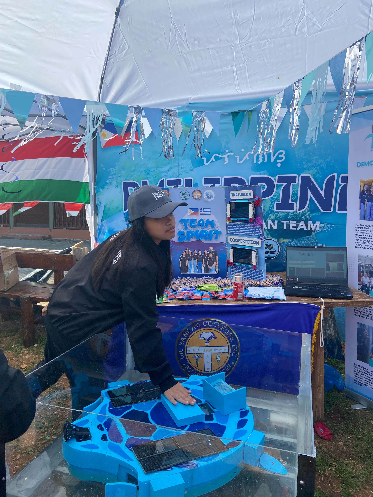
Logical/Mathematical is my highest at 84%, and I am not surprised.
That result feels shaped by years of choices: how I was raised, what I studied, why I ended up in engineering. I have always needed things to make sense before I accept them, to follow some internal logic rather than just intuition.
The Intrapersonal score of 72% resonated too. I spend a lot of time examining my own reasoning and questioning why I believe what I believe, almost as if understanding myself is its own logical problem to solve. People are supposed to change as they grow older, and I think I have in small ways. But the core of how I think, methodical, reflective, wanting reasons rather than assumptions, has stayed remarkably consistent.
Quiet Steps
Realistic goals
In junior high, everyone felt super competitive. People joined tons of orgs, competed everywhere, and got crazy high grades. I felt pressured to do the same, and it was not healthy. In senior high I realized it is okay not to do everything. What matters is being true to myself, so now I join the orgs I actually care about.
Desk lit by a lamp
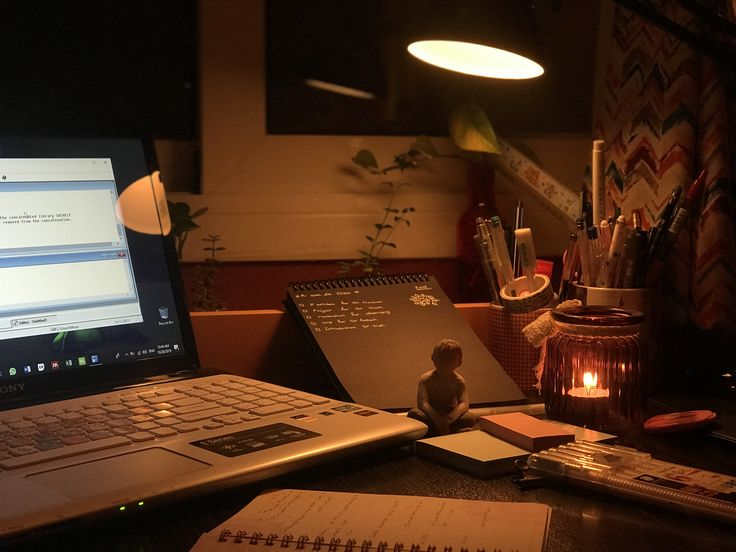
Being okay with boredom
Life is not always going to be at its peak, and I will not always be at my best. Taking care of my mental health means doing the quiet, boring steps, like resting and trying. Even when studying alone feels boring, I accept it because I know I will get through it.
A cup and a book
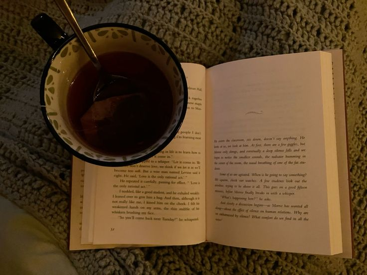
Shows and books that get me
I love sitcoms. Feeling like part of those shows makes my mind feel light. It is not just a distraction. It gives me mental comfort to unplug from society for a bit and just chill.
Laptop mid-episode
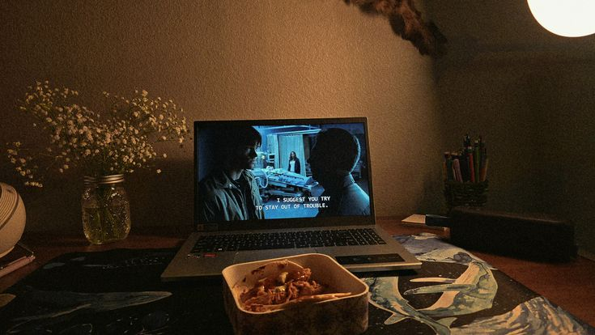
Eight Roles
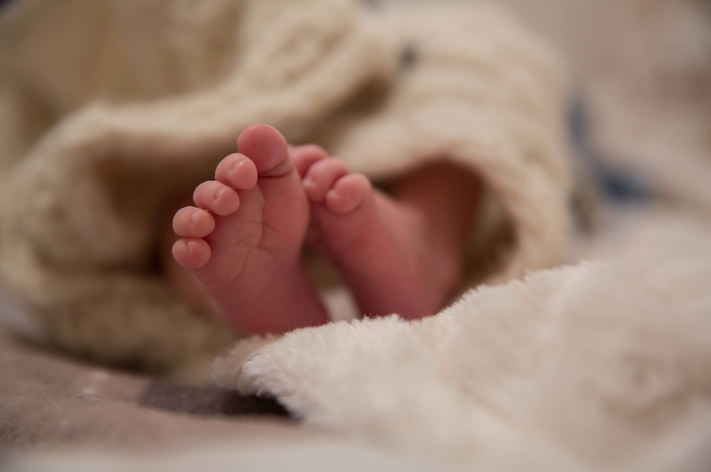
Completely reliant on my family. I had no words, so every need was communicated by crying.

My first words let me share basic ideas with my parents. Early social learning, preparing me for formal school.
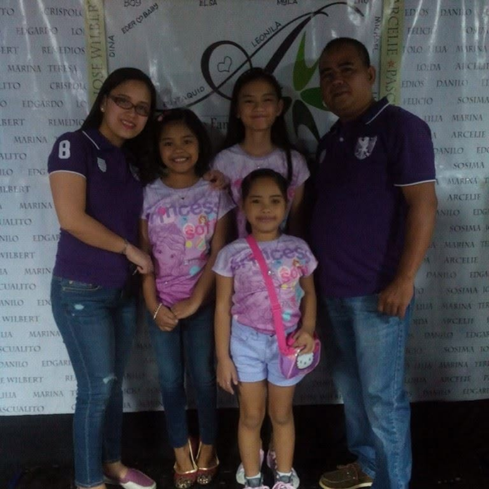
Unsolicited comments about my body shaped how I saw myself around peers.
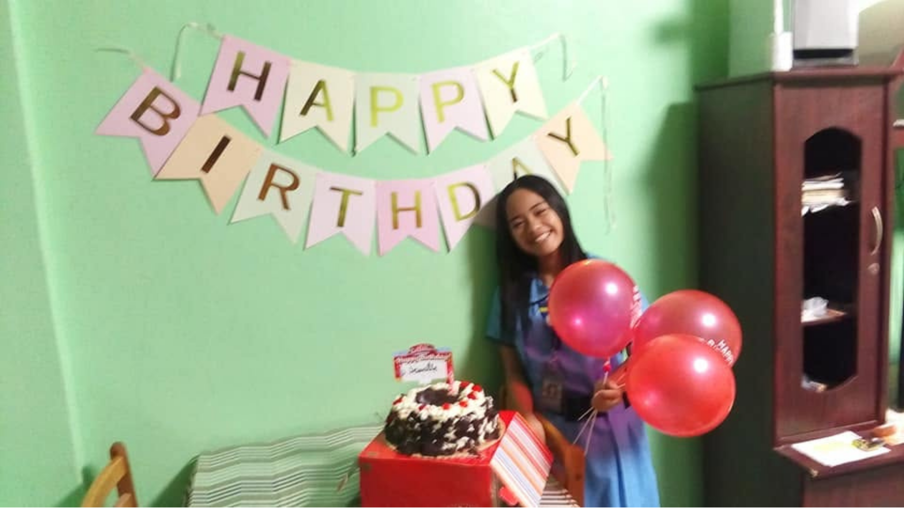
After twelve years as the youngest, a baby sister changed my family dynamics. I was unsure how to navigate my new role.
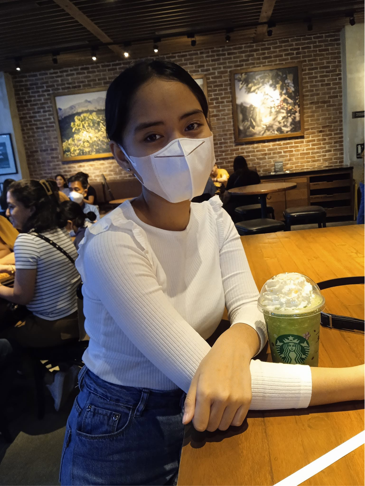
A new school opened new opportunities. I joined the robotics team and found a real passion for STEM.
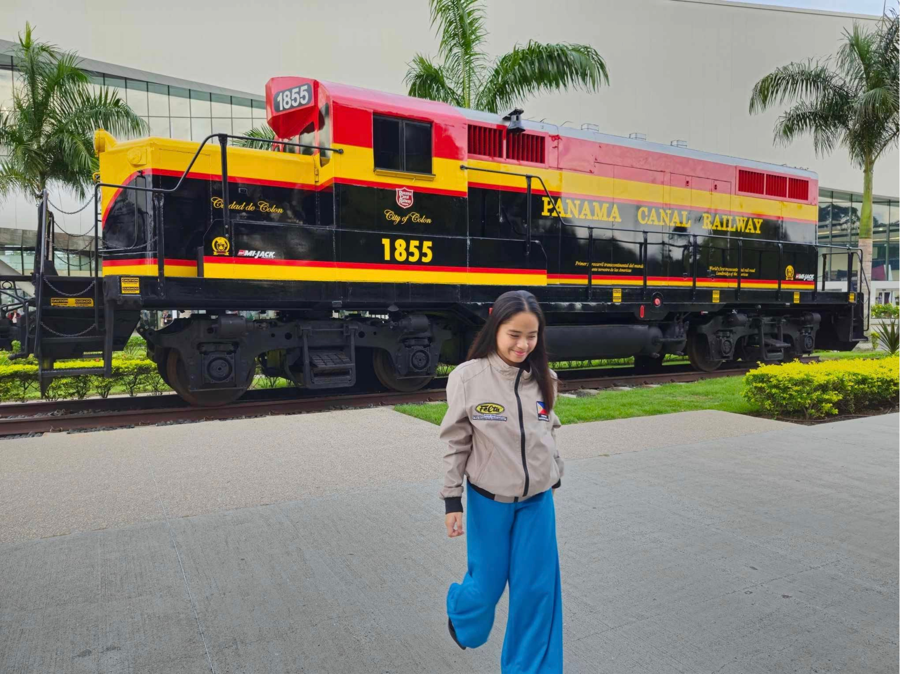
Continuing robotics made learning deeply engaging and fun.
Getting into Bulacan State University was a turning point toward independence, with a renewed sense of purpose.
I represent my school in academic competitions, and each one strengthens my identity as a dedicated scholar.
Closest and Furthest
Closest: Robotics Competitor and Active College Student. In these roles I feel capable, creative, and motivated because I am doing things out of genuine interest, not just complying with expectations.
Furthest: The Self-Conscious Peer. That identity was built on other people's comments, not my own choices or accomplishments. It feels the most distant from who I am today.
Not Yet
You at a competition venue
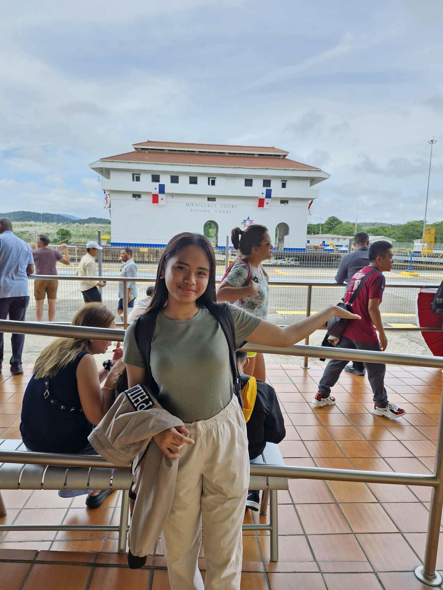
Still Sailing at 28
Ten years from now, I will be somewhere between 25 and 30, the age when the brain is said to be fully mature.
Right now I am a first-year engineering student and a woman in STEM, with a lot I still want to show the world. Since junior high, I have been part of teams that built innovations for marginalized communities. I trust that I will still be doing that kind of work by then, only with better skills and a clearer mind. My goal is to build something that gets patented and actually used by the people it was made for.
People say One Piece is too long to start, and they miss how good it is because they never stay for the payoff. Ten years can feel the same. It is easy to want results right away. But I think the person I become will be more patient than I am now. Today every mistake feels bigger than it is. By 25 or 30, I hope to understand that good work takes time, and that falling short once says nothing about what I am capable of. I also hope to be more comfortable asking for help, because the best projects I have been part of were never done alone. No captain reaches the end of the sea without a crew.
Relationships are something I rarely think about. There is so much to do in so little time that I am not sure where it would fit. That may change, and it would be okay if it does. What I am sure about is my family. My parents and my sisters are the reason I can dream this big without being afraid of failing. Ten years from now, I want to be just as close to them as I am today.
Whatever else changes, the values that shaped me should stay. Humility, caring about others, and the drive to keep going are the parts of me I would never trade for a more polished version. I do not want to become someone who forgets where she started. I expect to be a different person by then, but I hope she still feels the same excitement when something she built helps someone.
Sea or horizon, or you and your family
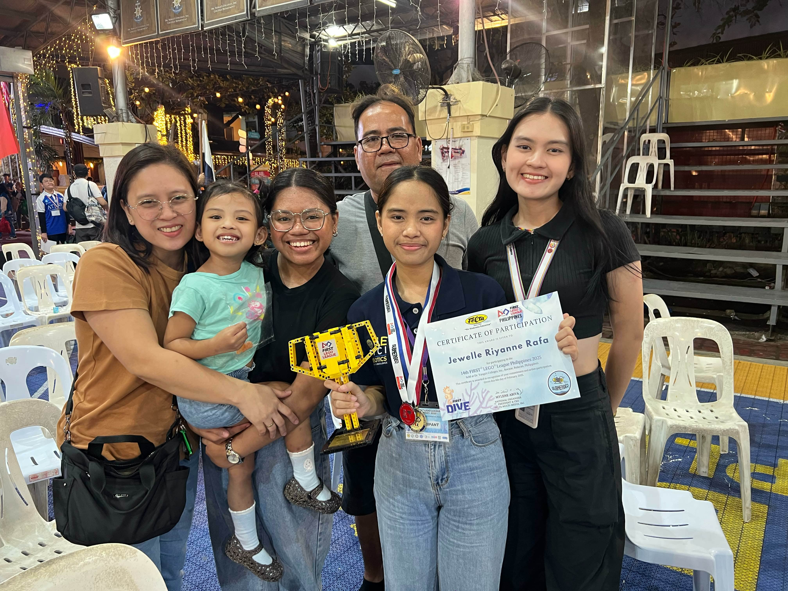